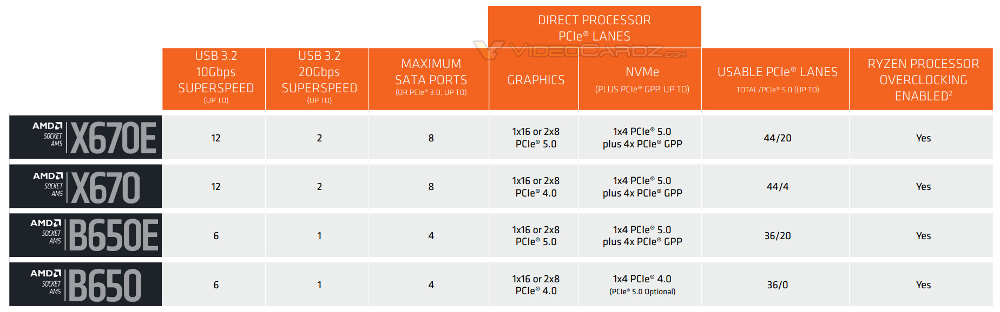

1. El procesador
El procesador, microprocesador o micro es el cerebro del ordenador, se encarga de:
- Coordinar y controlar la ejecución de instrucciones.
- Decodifica esas instrucciones.
- Genera pulsos de reloj para que las instrucciones se lleven a cabo de forma síncrona.
- Realiza operaciones aritméticas y lógicas.
- Almacena información temporal.
2. Componentes que forman la CPU
La CPU se forma por dos componentes principales: la Unidad de Control (UC) y la Unidad aritmético-lógica (ALU). Además, cuenta con unos buses de sistema que se encargan de transmitir información y unos registros que pueden almacenarla.
2.1 Unidad aritmeticológica (ALU)
Realiza operaciones aritméticas (suma, resta, multiplicación...) y lógicas (AND, OR...). Se comunica a través de un bus dedicado con la Unidad de Control.
2.2 Unidad de control (UC)
Se ocupa de coordinar y controlar las funciones de un ordenador. Monitoriza y envía las instrucciones a cada una de las partes del ordenador.
3. Juegos de instrucciones
TODO (CISC/RISC)
4. Procesadores comerciales
4.1 Características de los procesadores
4.1.1 Frecuencia de reloj
Se mide en GHz. Es el número de instrucciones por segundo que el procesador es capaz de procesar. Cuánto mayor sea esta frecuencia de reloj mejor.
Existen dos tipos de frecuencias, una base y otra turbo (turboboost). La turbo se usaría para procesos muy exigentes (p. ej: gaming).
4.1.2 Número de núcleos
Hoy en día es posible encontrar procesadores, tanto en AMD como en Intel, con muchos núcleos.
El número de núcleos permite ejecutar varias tareas de forma paralela. En esta ejecución influye también como está implementado el software que se ejecuta, es decir, cómo hace este software uso de los núcleos del mismo.
Originalmente los procesadores tenían un solo núcleo, pero con el paso del tiempo han evolucionado hacia múltiples núcleos integrados en el mismo procesador. Habitualmente los procesadores comerciales de entre 2 y 8 núcleos son los más utilizados, aunque existen variantes con mucha mayor cantidad como el AMD Threadripper 3970X (orientado a servidores) con 32 núcleos. Los equipos servidores (que necesitan más potencia y suelen estar encendidos siempre) pueden tener hasta 64 núcleos a día de hoy.
Nota
En las últimas generaciones de procesadores Intel ha aparecido recientemente el concepto de núcleos de rendimiento (núcleos-P) y núcleos eficientes (núcleos-E).
Por ejemplo, uno de los procesadores más potentes del mercado ahora mismo (09/10/2023) es el i9-13900KS, el cuál tiene 24 núcleos en total: 8 núcleos de lato rendimiento (P) y 16 núcleos eficientes (E).
4.1.3 Número de hilos
Dentro de cada núcleo existe el concepto de hilo (es como un núcleo virtual, que no está fisicamente presente). Los hilos ayudan a que los núcleos del procesador se aprovechen mejor. Las tareas se dividen en porciones y cada hilo se ocupa de una parte del trabajo.
4.1.4 Consumo energético
Su valor se mide en vatios (W), cuánto más potente sea el procesador más consumirá. Es importante elegir la fuente de alimentación del equipo en relación al consumo del procesador y la tarjeta gráfica.
4.1.5 Memoria caché
El procesador y la memoria RAM se comunican continuamente. Para acelerar el trabajo, a veces el procesador guarda la información en una memoria propia (caché). Esta memoria muy rápida pero también muy pequeña. La caché tiene tres tipos: L1, L2 y L3.
4.1.6 Socket
El lugar donde se inserta el microprocesador en la placa base es el socket. Antiguamente iba soldado a la placa base, pero hace muchos años que en ordenadores personales no van soldados a la placa y así se pueden cambiar facilmente.
Nota
El procesador, cuando va soldado en la placa base se denomina como SoC (System on a Chip). En los smartphones, por ejemplo, el procesador va integrado en la placa.
Los tipos de socket más comunes a día de hoy son:
- PGA (Pin Grid Array): los pines están en el procesador y el socket tiene los contactos planos. Era el utilizado habitualmente por AMD hasta el año pasado. La séptima generación de procesadores AMD (AMD7000) utilizan un socket LGA.
- LGA (Land Grid Array): los pines van en la placa base en lugar del procesador. Es el utilizado habitualmente por Intel.
- BGA (Ball Grid Array): el montaje no es sobre un soporte sino sobre la propia placa. El chip va soldado a la placa base. Es muy difícil actualizar los procesadores de este tipo debido a que son complicados de reemplazar (hay que tener en cuenta que va soldado a la placa, para reemplazarlo hay que utilizar una técnica denominada reballing).
- ZIF (Zero Insertion Force): mecanismo en el que el micro se inserta y retira sin necesidad de presión mediante una palanca cercana.
Consulta más información sobre este tema en este artículo de Hardzone.
En el ámbito comercial, Intel y AMD se disputan la lucha en la venta de procesadores.
4.2 AMD vs Intel en el tiempo
 |
|---|
| Tabla de las generaciones de procesadores intel y AMD. Obtenida de: Carballar.com. |
Nota
Para obtener información más detallada sobre las distintas generaciones de procesadores, consulta este enlace.
4.3 Nomenclatura en procesadores Intel
El usuario de Reddit M1ghty_boy ha creado imágenes beginner friendly sobre procesadores y tarjetas gráficas. A continuación se muestra la que ha creado de Intel:

4.3.1 Ejemplos variados
A continuación se muestra un Intel de 3ª generación para portátiles, con dos núcleos y un precio de lanzamiento en Junio de 2012 de aproximadamente 345€.

La última generación de Intel es la número 13, la cuál ha aparecido por primera vez en este año 2023.
 |
|---|
| Nomenclatura de procesadores Intel explicada. Obtenida de: Intel. |
4.4 Nomenclatura en procesadores AMD
A continuación se muestra la nomenclatura de AMD. En la imagen se indica que las generaciones de AMD van de la 1 a la 5 (pero ya ha salido la 7 también).

A continuación, mostramos la imagen del anuncio de AMD para sus procesadores de 7ª generación (Ryzen 3/5/7/9 7***) que han salido a finales de 2022:

5. Intel vs AMD: Sockets y chipsets
5.1 AMD: sockets AM4 y AM5
En AMD 7000 (séptima generación) el socket usado en la placa base se denomina AM5 (en las anteriores su denominación era AM4). El socket AM5 va a ser reutilizable, como mínimo, por la siguiente generación de procesadores que salga de AMD. Si compramos una placa base con socket AM5 podremos, como mínimo, cambiar el procesador hasta 2025 (esto ha indicado la propia empresa).
 |
|---|
| Imagen de un procesador AM5 (izquierda) y un AM4 (derecha). Obtenida de: artículo en PCComponentes. |
Intel, por otra parte, va a sacar un nuevo socket el año que viene. El socket actual para la última generación de Intel (la 13ª, Raptor Lake) es el LGA1700, pero el año que viene ya han anunciado que se utilizará un socket diferente (el LGA1851) entre 2024 y 2026.
5.1.1 Chipsets para el socket AM5
En AM5 tenemos 5 gamas de chipsets. A continuación se resumen brevemente:
5.1.1.1 Gama baja
- A620: soporta PCIe 4.0 x16, SSD NVMe, DDR5 y AMD Expo (perfiles de overclock para la RAM). No dispondrá de overclock para el procesador. No soporta USB 3.2 gen2.
5.1.1.2 Gama media
- B650: soporte para PCIe4.0 x16 o 2 x8. Viene hasta con un USB 3.2 Gen2. Algunas placas serán compatibles con PCIe 5.0.
- B650E: similar a la anterior, ahora soportando GPUs de quinta generación (PCIe 5.0) y mejores fases VRM.
5.1.1.3 Gama alta
- X670: a diferencia de los chipsets 650, este incorpora una ranura PCIe 5.0 M.2.
- X670E: es como el anterior, pero además es compatible con GPUs (tarjetas gráficas) PCIe 5.0.

5.2 Intel: socket LGA1700
La última generación de Intel (13) utiliza un socket LGA1700. Este socket soporta la generación 13 y soportará la 14 (saldrá a finales de este año 2023 con). En la generación se espera una mejora de rendimiento muy pequeña.
5.2.1 Chipsets para LGA1700
Chipsets presentados en 2021:
- H610
- B660
- H670
- Z690
Nuevos chipsets (finales de 2022):
- B760
- H770
- Z790
Algunas novedades de los nuevos chipsets son:
- PCI-Express 5.0 con 16 raíles, además de PCIe 4.0 y 3.0.
- Soporte para DDR5.
- Wifi 6E integrado.
- USB 3.2 Gen 2 ampliado.
- Menos puertos SATA priorizando PCIe.
- Distinta compatibilidad de procesadores.
Nota
Estos son los chipsets compatibles mientras se escribe este documento, a fecha del 03/10/2023.
6. Referencias:
- Alberto Cruz. Qué es un procesador, características y tipos. PCComponentes. Obtenido de: artículo en PCComponentes. Última consulta el 09/10/2023.
- Ángel Aller. Socket AM5 vs AM4, la comparativa AMD ideal para comprar CPU. Obtenida de: artículo en PCComponentes el 3 de Octubre de 2023.
- LGA1700, el socket Intel que soporta la 13ª y 14ª generación Core. Obtenida de: artículo en PCComponentes el 3 de Octubre de 2023.
- Guía placas y chipsets AMD Ryzen 7000. Obtenido de: Wikiversus